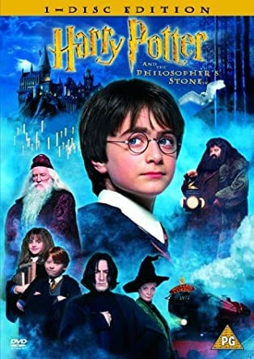
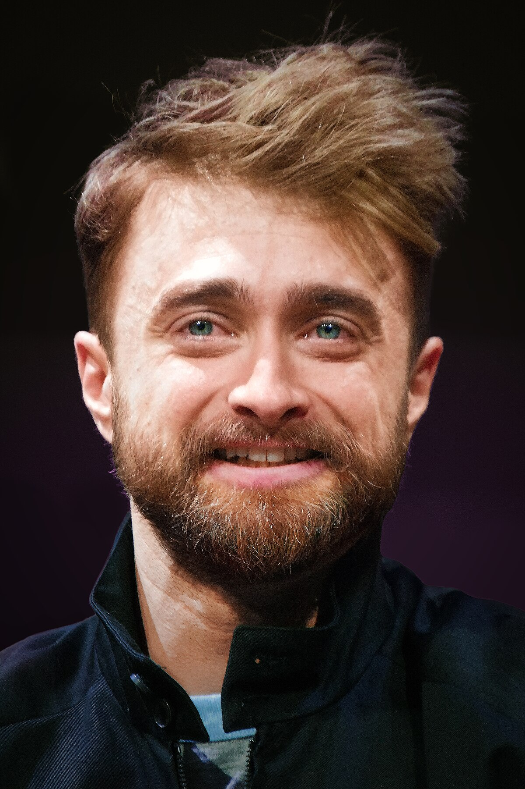
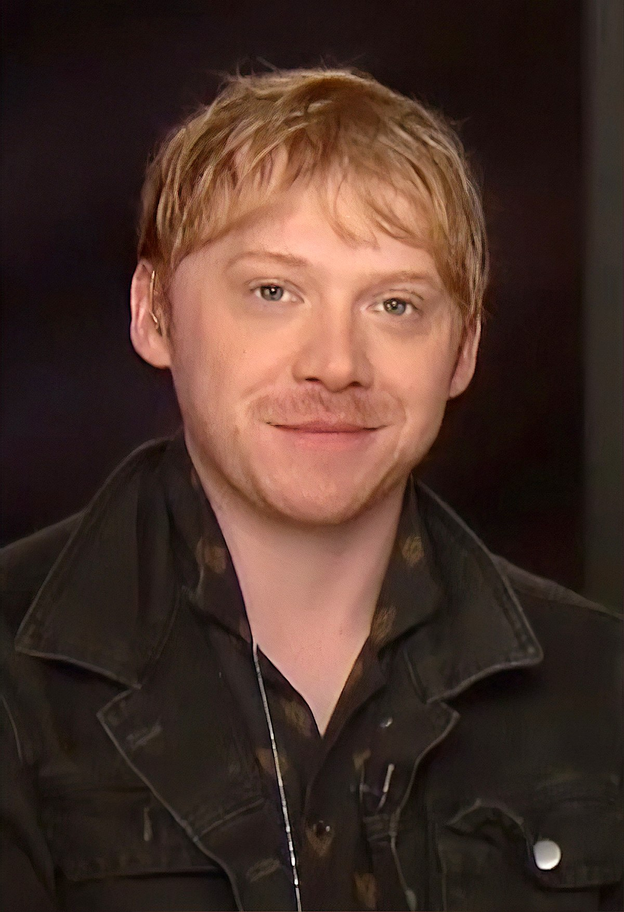
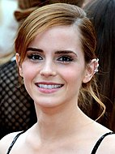
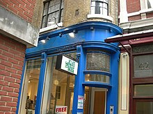

Synopsis
Lord Voldemort, an evil and powerful dark wizard, has just been defeated. When he tried to kill a 1 year-old boy, Harry Potter (Daniel Radcliffe), the killing curse rebounded upon him, destroying his body. Harry is left an orphan with a lightning-bolt scar on his forehead, Voldemort having killed his parents, Lily and James Potter. Professors Dumbledore (Richard Harris) and McGonagall (Dame Maggie Smith) and Gamekeeper Hagrid (Robbie Coltrane) leave him on the doorstep of his ultra-conventional, insensitive, negligent Muggle (non-magical) relatives, the Dursley family, who take him in. Harry's relatives decide to conceal his magical heritage from him and make him live in a cupboard under the stairs for ten years. .
Shortly before Harry's 11th birthday, he receives a letter. His outraged uncle, however, reads and burns it. The sender does not give up, and the Dursleys receive successively larger numbers of the same correspondence. Soon, his Uncle Vernon (Richard Griffiths), with Harry in tow, hide in a hut on a small island to escape. That night (which happens to be before Harry's birthday), he is visited by Hagrid who bursts through the locked door of the hut. With Hagrid holding the Dursleys at bay, Harry finally reads his letter, in which he learns he has been invited to study magic at Hogwarts School of Witchcraft and Wizardry. The next day Harry and Hagrid head to Diagon Alley in London (the secret magical location hidden behind the famous Wizarding pub The Leaky Cauldron). Harry enters the Wizarding world for the first time, learns to his surprise that he is famous, and meets the new Hogwarts Defense Against the Dark Arts teacher, Professor Quirrell (Ian Hart). He takes the train to Hogwarts from Platform Nine and three-quarters, befriending Ron Weasley (Rupert Grint), and meeting Hermione Granger (Emma Watson), a Muggle-born witch.

Upon arrival, the Sorting Hat places Harry, Ron and Hermione in Gryffindor House. Draco Malfoy (Tom Felton), an arrogant and elitist student, gets placed in Slytherin. At the end of their first week at Hogwarts, Harry and Ron discover that Gringotts, the Wizarding bank, was broken into and a vault that Harry and Hagrid visited had been the subject of the robbery. Later, Harry discovers he has a talent for riding broomsticks, and is recruited to join Gryffindor's Quidditch team as a Seeker, much to Malfoy's displeasure.
Harry, Ron, Hermione explore Hogwarts late at night and accidentally stumble across the door to a corridor. A three-headed dog, christened Fluffy by Hagrid, guards a trapdoor. On Halloween, Quirrell informs everyone that a troll has entered the castle; Harry and Ron fight the troll to save Hermione, who is trapped in the girls' bathroom, and the three become best friends. At Harry's first Quidditch match, Harry's broom becomes possessed, nearly knocking him off. Hermione sees Professor Severus Snape (Alan Rickman), the sinister Potions master and head of Slytherin House, staring at Harry and mouthing words, making her believe that Snape has caused the broom to misbehave with a dark curse. Hoping to save Harry, Hermione sets Snape's robes on fire, distracting him and others and allowing Harry to survive.
At Christmas, Harry receives an Invisibility Cloak, once belonging to his father, which renders its wearer invisible. Harry uses it to explore the Restricted Section in the library to research information on Nicolas Flamel, a name Hagrid lets slip when confronted about his knowledge of Fluffy. Eventually, Harry learns that "Nicolas Flamel is the only known maker of the Sorcerer's Stone, which produces the Elixir of Life which will make the drinker immortal."
Harry sees Snape trying to get information from Quirrell about getting past Fluffy; Quirrell says he does not know what he's talking about. Harry, Ron, and Hermione are sure that Snape is trying to steal the Philosopher's Stone in order to restore Lord Voldemort to power. While at Hagrid's hut, the trio discover a dragon egg Hagrid was nursing in a fire. Later the egg hatches a Norwegian Ridgeback dragon, and Hagrid decides to call him "Norbert". The friends are nervous for Hagrid, since dragon breeding had long been outlawed in the Wizarding world, and Hagrid had something of a reckless nature, who has long since nursed a strong desire for a dragon. Finally, Harry, Ron, and Hermione are able to convince Hagrid to let Norbert go live with other dragons of his kind in Romania.
Harry, Hermione, Ron and Draco are caught out late at night, and are forced to serve detention with Hagrid in the Forbidden Forest. Harry sees a hooded figure drink the blood of an injured unicorn, which makes Harry's forehead scar start burning. Firenze, a centaur, tells Harry that it is a monstrous thing to slay a unicorn, let alone drink its blood. He also tells Harry that unicorn blood will keep one alive, and that the hooded figure is in fact Voldemort.
Harry, Hermione and Ron find out that Hagrid has told a hooded stranger how to get past Fluffy, and they believe the theft of the Stone is imminent. Rushing to finally confide in Professor Dumbledore their news, they meet Professor McGonagall, who is shocked to find out how much they knew about the Stone but reassures them all the same that it is safe in the castle. She also tells them that Dumbledore has been sent away on an important mission by the Ministry of Magic.

Positive that Dumbledore's summons was a red herring to take Professor Dumbledore away from Hogwarts, the trio make plans to thwart Snape's theft of the stone. They set out to reach the stone first, navigating the security system set up by the school's staff, which is a series of complex magical challenges. The three make it through together until finally, Harry must enter the inner chamber alone. There he finds that Professor Quirrell, not Snape, is attempting to steal the Stone. Realizing that Snape was trying to protect him from harm all along, Harry confronts Quirrell and survives a second encounter with Lord Voldemort, who has possessed Quirrell and appears as a ghastly face on the back of Quirrell's head. Quirrell crumbles when he touches Harry's skin, and Harry passes out because of his close proximity to Lord Voldemort. Voldemort then pitilessly abandons Quirrell, who dies in the aftermath of his possession.
Harry wakes up in the hospital wing. Dumbledore reveals to Harry that Harry's mother died to protect Harry as an infant. Her pure, loving sacrifice provides Harry with an ancient magical protection from Voldemort's lethal spells and also prevents Voldemort from touching Harry without suffering terribly. Dumbledore also says that the Sorcerer's Stone has been destroyed to prevent future attempts by Voldemort to steal it.
Finally, at the end-of-year feast, the House Points totals are given: Gryffindor is in last place. However, Dumbledore gives a few "last-minute additions", granting points to Harry, Ron, and Hermione, so that Gryffindor wins the House Cup.
Cast

Daniel Radcliffe as Harry Potter:
An 11-year-old orphan living with his unwelcoming aunt, uncle, and cousin, who learns of his own fame as a wizard known to have survived his parents' murder at the hands of the dark wizard Lord Voldemort as an infant when he is accepted to Hogwarts School of Witchcraft and Wizardry. Columbus had wanted Radcliffe for the role since he saw him in the BBC's production of David Copperfield before the open casting sessions had taken place but had been told by casting director Susan Figgis that Radcliffe's protective parents would not allow their son to take part.[6] Columbus explained that his persistence in giving Radcliffe the role was responsible for Figgis' resignation.[6] Radcliffe was asked to audition in 2000 when Heyman and Kloves met him and his parents at a production of Stones in His Pockets in London.[7] Heyman and Columbus successfully managed to convince Radcliffe's parents that their son would be protected from media intrusion. They agreed to let him play Harry.[6] Rowling approved of Radcliffe's casting, stating that "having seen [his] screen test I don't think Chris Columbus could have found a better Harry."[8] Radcliffe was reportedly paid £1 million for the film, although he felt the fee was "not that important" to him.[9] The Saunders triplets appear as Harry as a baby.[10]

Rupert Grint as Ron Weasley:
Harry's best friend at Hogwarts and a younger member of the Weasley wizarding family. A fan of the series, Grint decided he would be perfect for the part "because [he has] ginger hair".[9] Having seen a Newsround report about the open casting he sent in a video of himself rapping about how he wished to receive the part. His attempt was successful as the casting team asked for a meeting with him.[9]

Rupert Grint as Ron Weasley:
Harry's other best friend and the trio's brains. Watson's Oxford theatre teacher passed her name on to the casting agents and she had to do over five interviews before she got the part.[11] Watson took her audition seriously, but "never really thought [she] had any chance of getting the role."[9] The producers were impressed by Watson's self-confidence and she outperformed the thousands of other girls who had applied.[12]
Filming
Two British film industry officials requested that the film be shot in the United Kingdom, offering their assistance in securing filming locations, the use of Leavesden Film Studios, as well as changing the UK's child labour laws (adding a small number of working hours per week and making the timing of on-set classes more flexible).[46] Warner Bros. accepted their proposal. Principal photography began on 29 September 2000 at Leavesden Film Studios.[84] Filming at the North Yorkshire's Goathland railway station took place on 2 October 2000.[85] Canterbury Cathedral and Scotland's Inverailort Castle were both touted as possible locations for Hogwarts; Canterbury rejected Warner Bros. proposal due to concerns about the film's "pagan" theme.[86][87] Alnwick Castle and Gloucester Cathedral were eventually selected as the principal locations for Hogwarts,[6] with some scenes also being filmed at Harrow School.[88] Other Hogwarts scenes were filmed in Durham Cathedral over a two-week period;[89] these included shots of the corridors and some classroom scenes.[90] Oxford University's Divinity School served as the Hogwarts Hospital Wing, and Duke Humfrey's Library, part of the Bodleian, was used as the Hogwarts Library.[91] Filming for Privet Drive took place on Picket Post Close in Bracknell, Berkshire.[89] Filming in the street took two days instead of the planned single day, so payments to the street's residents were correspondingly increased.[89] For all the subsequent film's scenes set in Privet Drive, filming took place on a constructed set in Leavesden Film Studios, which proved to be cheaper than filming on location.[92] London's Australia House was selected as the location for Gringotts Wizarding Bank,[6] while Christ Church, Oxford, was the location for the Hogwarts trophy room.[36] London Zoo was used as the location for the scene in which Harry accidentally sets a snake on Dudley,[36] with King's Cross Station also being used as the book specifies.[93] Filming concluded on 23 March 2001, with final work being done in July 2001.[51][94][84]

Because the American title was different, all scenes that mention the philosopher's stone by name had to be shot twice, once with the actors saying "philosopher's" and once with "sorcerer's".[51] The children filmed for four hours and then did three hours of schoolwork. They developed a liking for fake facial injuries from the makeup staff. Radcliffe was initially meant to wear green contact lenses as his eyes are blue, and not green like Harry's, but the lenses gave Radcliffe extreme irritation. Upon consultation with Rowling, it was agreed that Harry could have blue eyes.[95]
The steam engine used in the film as the Hogwarts Express was GWR 4900 Class 5972 Olton Hall, but it was originally not the first locomotive to be selected as the Hogwarts Express. To promote the books, the Southern Railway locomotive 34027 Taw Valley was repainted and renamed temporarily, but was rejected by director Chris Columbus as looking 'too modern' for the film.[96][97]